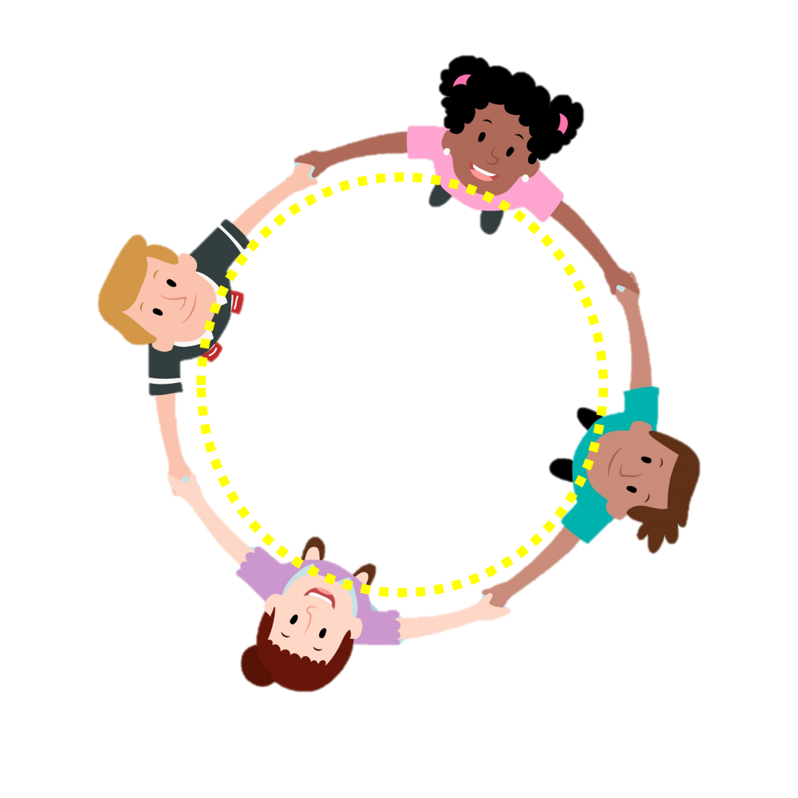
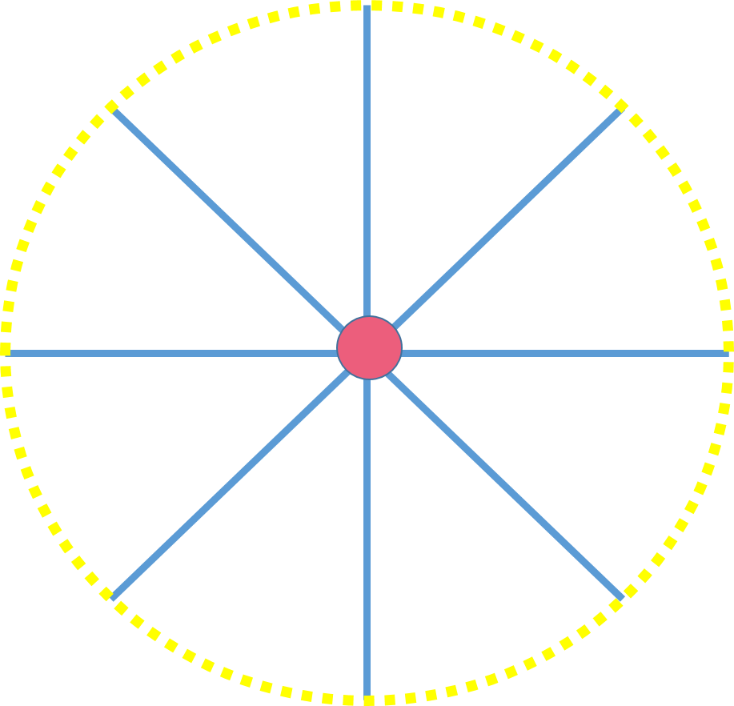
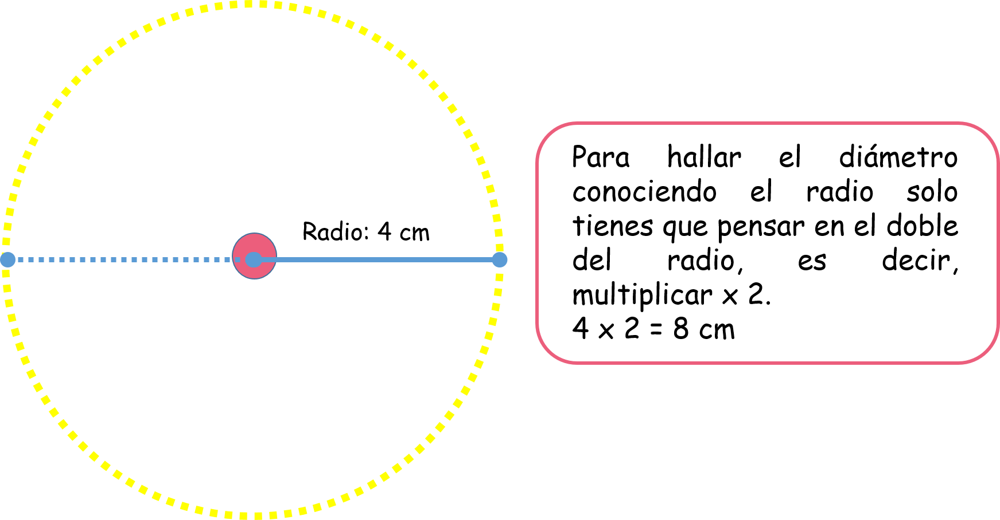
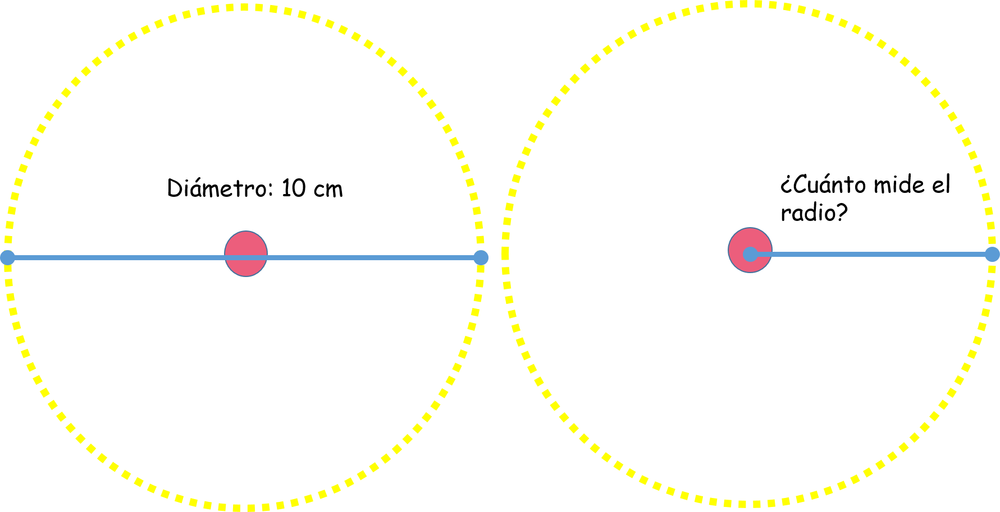
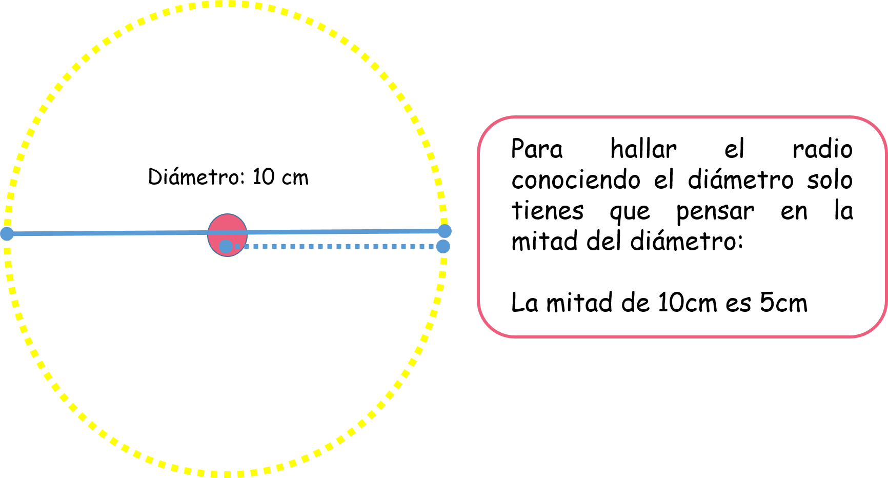

El círculo y la circunferencia
En este capítulo vas a usar el doble y la mitad de un número.
¿Qué es el círculo y la circunferencia?
Estas dos palabras hablan de dos cosas que están relacionadas pero que no son lo mismo.
Observa:
Estos niños están tomados de la mano formando un círculo. El borde que rodea al círculo formando el contorno se llama circunferencia.
Veamos las diferencias:
Todo el fondo coloreado de azul es una figura plana llamada Círculo, y el contorno punteado de amarillo es una línea curva cerrada llamada Circunferencia.
- ¿Qué vamos a aprender?
- Partes más importantes de una circunferencia
- ¿Cómo hallar el diámetro si ya tengo el radio?
- ¿Cómo hallar el radio si ya tengo el diámetro?
(1) Partes más importantes de una circunferencia:
como ya sabemos la circunferencia es el contorno del círculo, y es una curva cerrada. Esta curva cerrada tiene varias partes importantes que la conforman y conocerlas nos ayudará a comprender por qué no es lo mismo que un círculo.
A. El centro:
Es un punto que está justo en la mitad de la circunferencia y desde este punto podemos trazar líneas que estarán siempre a la misma distancia de cualquier punto de la circunferencia.
Observa:
Si mides con una regla cada una de estas líneas encontrarás que miden exactamente lo mismo.
B. El diámetro:
Es un segmento que une dos puntos de la circunferencia pasando siempre por el centro.
Observa:
Si observas este segmento te darás cuenta que atraviesa toda la circunferencia.
C. El radio:
Es el segmento que une al centro con cualquier punto de la circunferencia.
Observa:
(2)¿Cómo hallar el diámetro si ya tengo el radio?
Recuerda que el diámetro y el radio no son lo mismo, el diámetro es un segmento que se extiende de punto a punto de la circunferencia pasando por el centro, mientras que el radio podríamos decir que es la mitad del diámetro.
Cuando en un ejercicio conocemos el radio de una circunferencia podemos usarlo para hallar el diámetro de esta usando solo una operación: la multiplicación por 2.
Regla:
Diámetro = Radio X 2
Observa:
En esta circunferencia nos están diciendo que el radio mide 4 cm, si observas bien te das cuenta que el radio es la mitad del diámetro, ya que cada segmento que pase por el centro hacia cualquier punto de la circunferencia medirá lo mismo. Para hallar el diámetro vamos a usar entonces el radio.
Observa:
Listo! el diámetro de esta circunferencia es 8 cm.
(3) ¿Cómo hallar el radio si ya tengo el diámetro?
El radio como ya lo visualizamos en el punto anterior es justo la mitad del diámetro, por lo cual para hallar el radio en una situación en la cual ya conocemos el diámetro solo tenemos que pensar en la mitad de lo que mide el diámetro.
Observa:
En esta circunferencia nos dicen que su diámetro es 10, vamos a hallar la mitad de 10 para así encontrar el radio.
Regla:
Radio = Diámetro ÷ 2
Observa:
Y listo! el radio de esta circunferencia es 5 cm.
Material extra para trabajar el tema de círculo y circunferencia:
En el siguiente enlace podrás descargar un pdf con ejercicios de reconocimiento del círculo y la circunferencia creado por Actividadeseducativas.net
Vídeos orientativos:
En el vídeo “Círculo y circunferencia” de Happy learning encontrarás una explicación muy ilustrativa de estos dos conceptos
En el vídeo “Esto no es lo mismo: círculo y circunferencia” de Aula 365- Los creadores hallarás una explicación divertida sobre la diferencia entre estos dos conceptos
En el vídeo “Elementos de la circunferencia y el círculo” de Mundoprimaria.com encontrarás una explicación de los elementos que conforman a la circunferencia